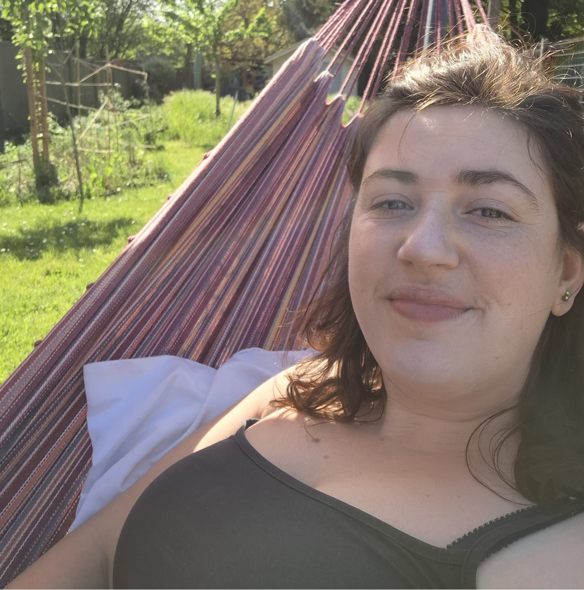

wie ben ik?
Ik ben Jolien, de vrouw achter Drakenziel. Ik werk met energie en intuïtie (en wil daar later nog klank aan toevoegen). Niet vanuit perfectie, maar vanuit aanwezigheid en zachtheid.
Mijn praktijk is ontstaan in een periode waarin mijn lichaam me dwong om te vertragen. In die stilte ontdekte ik hoe helend het is om zachter te worden, om niet te pushen, om te luisteren naar wat er onder de oppervlakte leeft. Dat is nog altijd mijn kompas: werken vanuit eerlijkheid, ritme en respect voor het lichaam. Mild en zacht zijn voor onzelf - en anderen.
Ik ben geen healer die boven haar eigen processen staat.
Ik ben iemand die zelf door cycli van overprikkeling, herstel en herbeginnen gaat. Vanuit menselijkheid en mildheid.

drakenziel
Drakenziel is mijn praktijk én mijn oefenveld.
Het is ontstaan in een periode waarin energetisch werk, intuïtie en symboliek me hielpen (en nog steeds helpen) om te vertragen, te luisteren en mijn eigen ritme terug te vinden.
In die tijd voelde ik me sterk aangetrokken tot drakenenergie. Ik leerde enkele van mijn gidsen kennen, waaronder één die een drakensoort bleek te zijn, en Tiamat kwam onverwacht met een boodschap. Die kracht was toen heel aanwezig; een soort oerkracht die me hielp om richting te vinden.
Vandaag is die drakenenergie minder op de voorgrond.
Ze is geen vaste methode, geen energie die ik inzet. Ze blijft een deel van de Drakenziel, een deel van mezelf, meanderend zoals het leven.
Drakenziel beweegt dan ook mee met mijn leven, mijn belastbaarheid en mijn groei. Het is geen façade, maar een levende praktijk die zich aanpast aan wat klopt.
wat je bij drakenziel mag verwachten
hoe ik werk
In mijn sessies nodig ik je uit om te landen, met zachthheid, eenvoud en de vrijheid van je eigen systeem.
Ik werk intuïtief:
- met energie, kleuren en innerlijke beweging
- met orakelkaarten en kristallen
- met zachte klanken die het zenuwstelsel ondersteunen
voor wie
Drakenziel is er voor wie zachtheid zoekt.
Voor wie niet wil doen alsof het goed gaat.
Voor wie wil zakken in het lichaam, in het moment, in zichzelf.
Je hoeft niets te bewijzen.
Je hoeft niets te kunnen.
Je bent welkom zoals je bent.
wat je mag verwachten
Bij drakenziel kom je in een ruimte waar je mag vertragen.
Waar je lichaam weer mee mag spreken.
Waar je niet moet presteren, oplossen of “goed doen”.
Waar je gedragen wordt door zachtheid, eerlijkheid en aanwezigheid.
Waar je mag ademen, voelen en thuiskomen.